Architecture and self-assembly of the jumbo bacteriophage nuclear shell
Laughlin, Deep, et al. 2022
What the hell is a "jumbo phage"?

Scale bars are 50 nm
Chaikeeratisak, Vorrapon, et al. "Assembly of a nucleus-like structure during viral replication in bacteria." Science 355.6321 (2017): 194-197.
Jumbo phage infection cycle
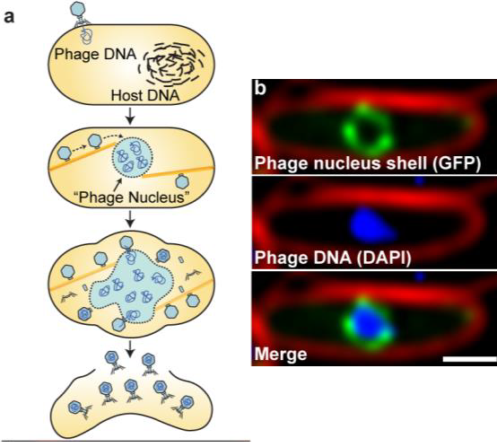
Tomography overview
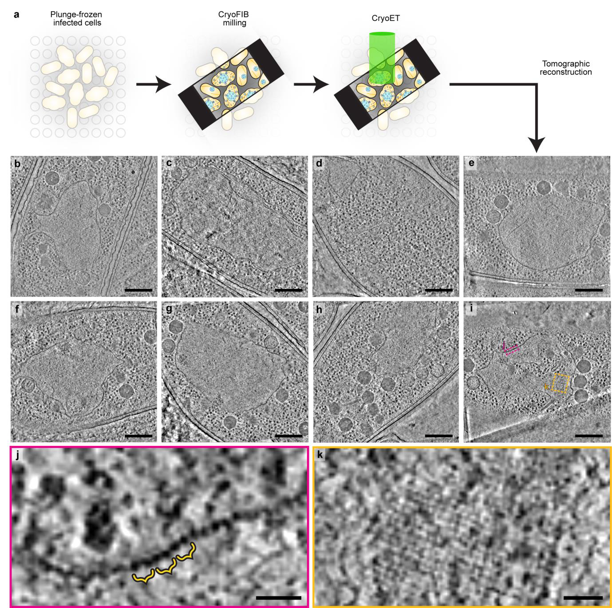
Tomography
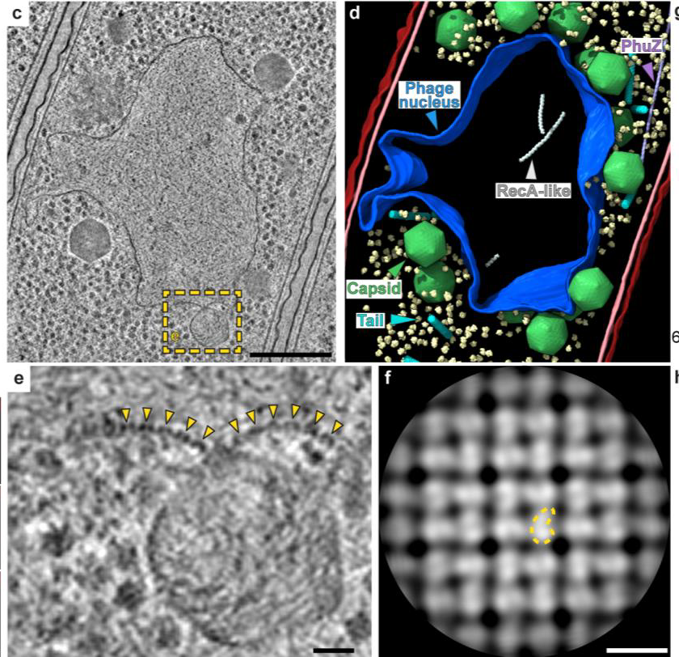
Quasi-p4 lattice
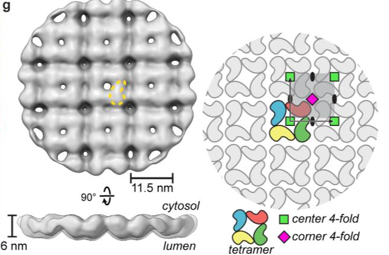
https://www.mexicolore.co.uk/aztecs/artefacts/chimalli
Purification and SPA
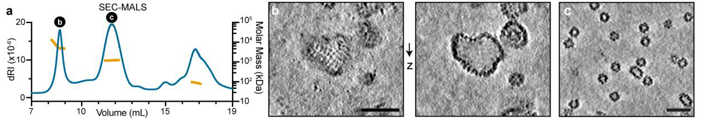
Localized refinement
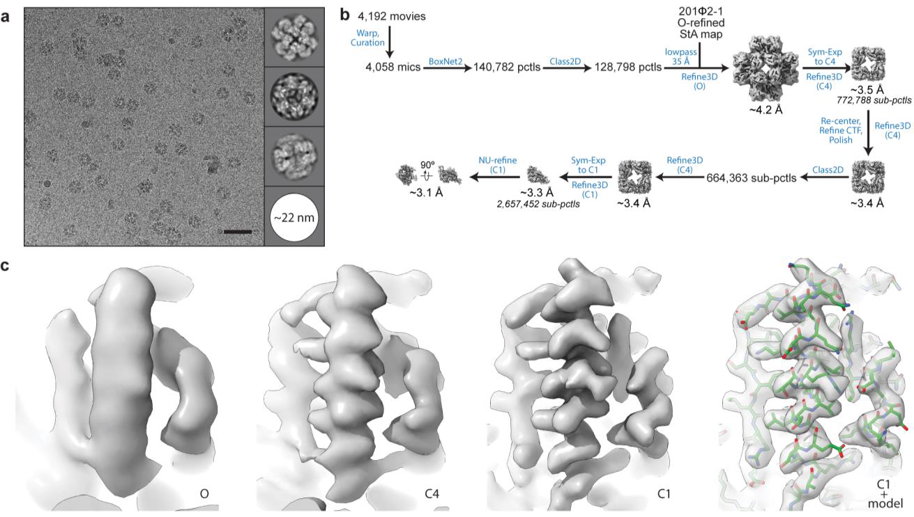
Minor decamer species
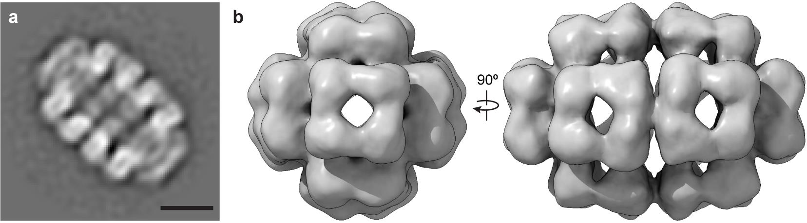
In vitro map
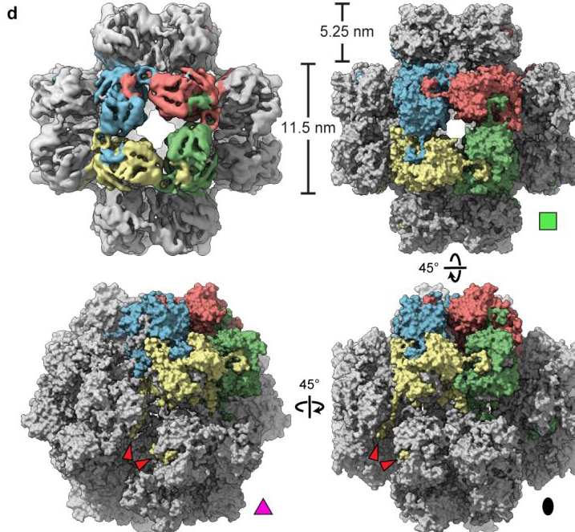
Monomeric model
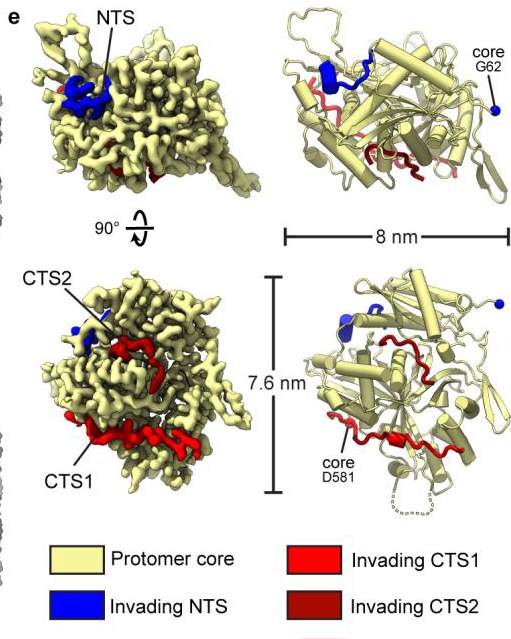
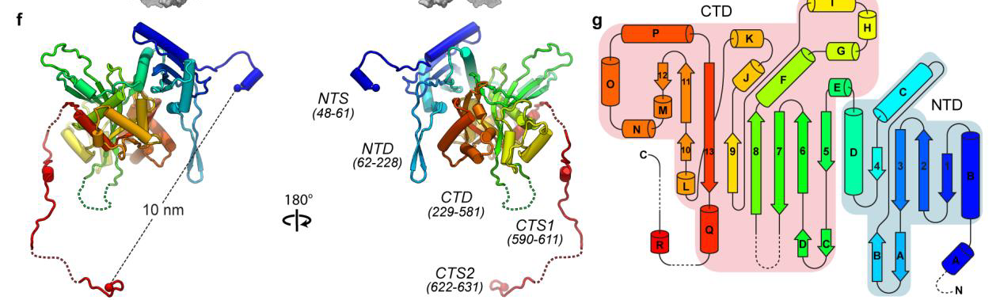
Assembly
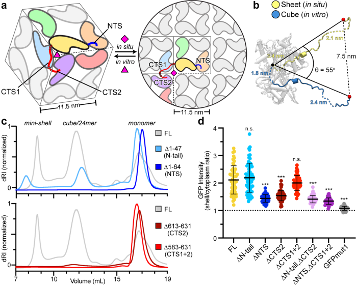
Assembly
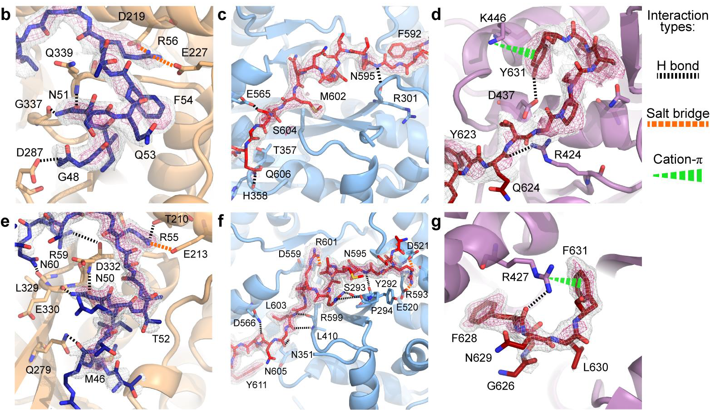
Assembly
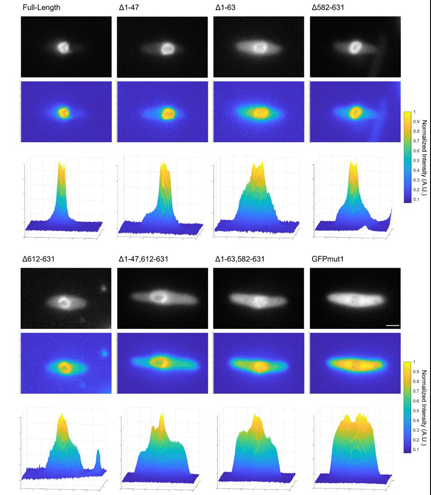
Pores and MD
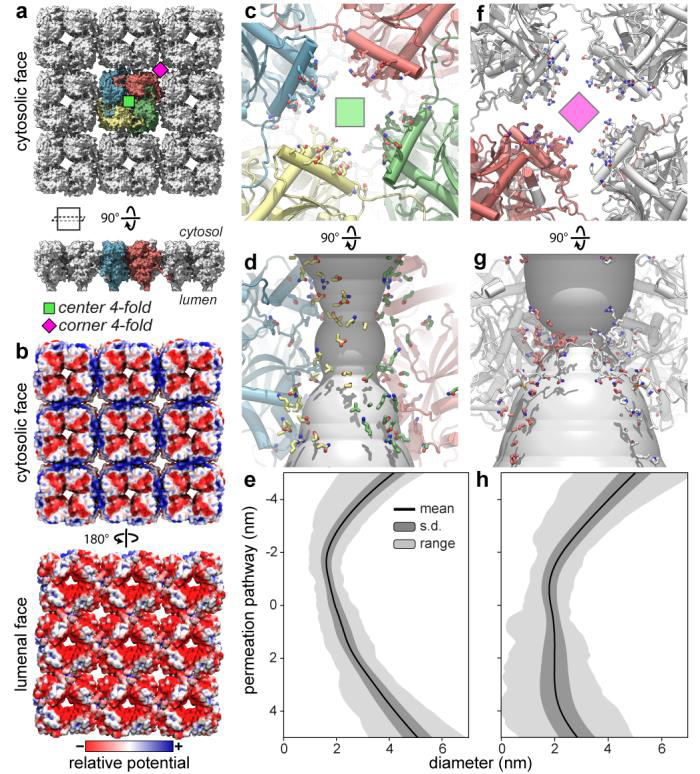
Pores and MD
Goslar chimallin
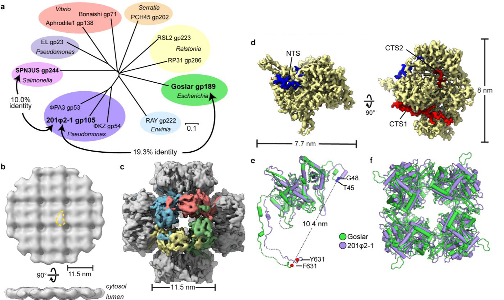
UFOs USBs
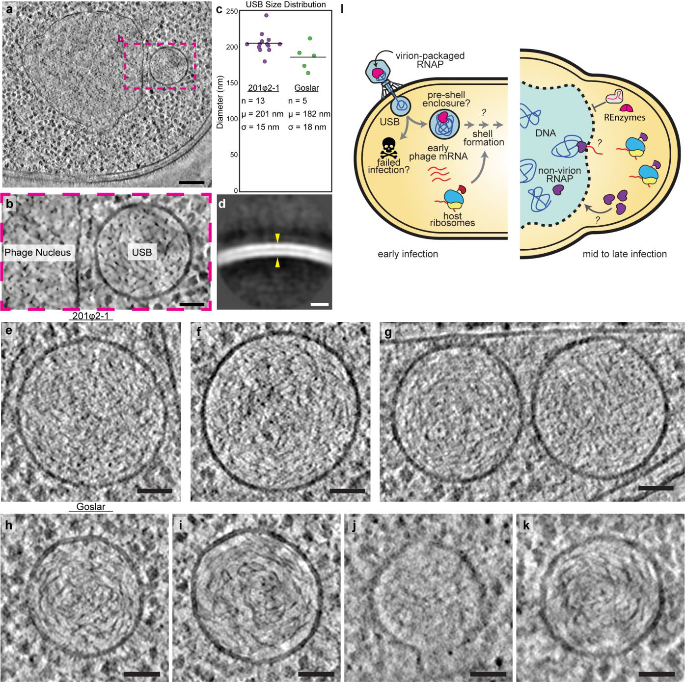
Who cares anymore
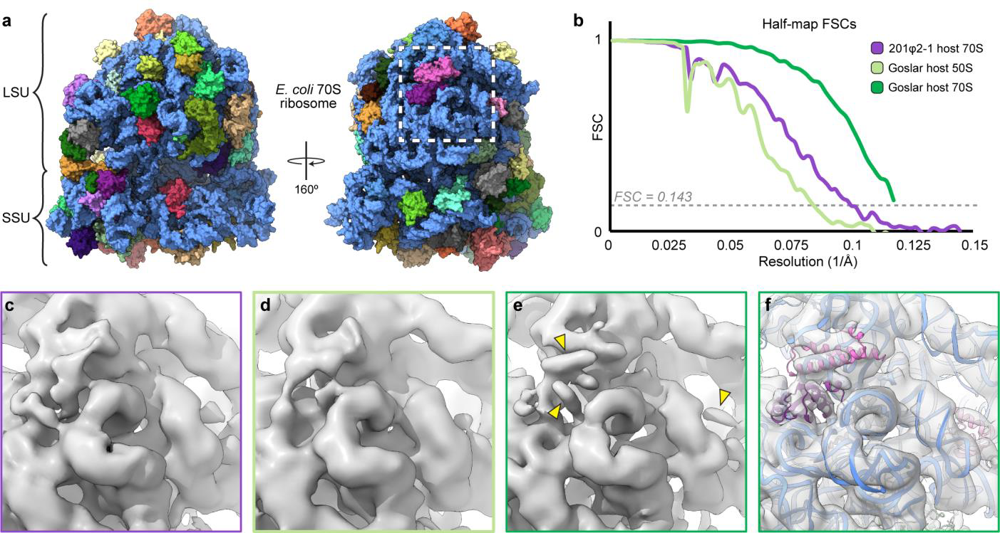